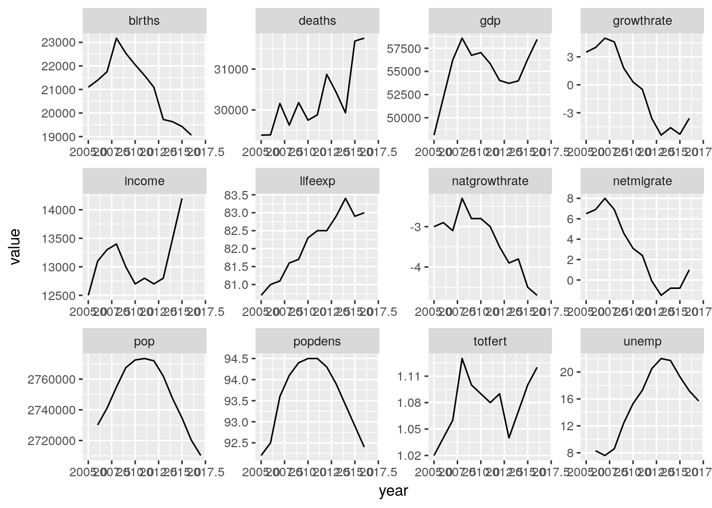

3 Data Wrangling
3.1 Datasets used in this chapter
library(tidyverse)
# hmd_counts
# Deaths and exposures by age, year, sex and country
# source: Human Mortality Database
load('data/hmd/hmd_counts.RData')
# General social survey
# source: http://gss.norc.org/s
gss <- haven::read_stata('data/gss/GSS2016.DTA')
# euro_regio
# European regional population statistics
load('data/euro_regio/euro_regio.Rdata')
# eu_timeuse_tot
# European timeuse survey
# source: Eurostat
load('data/eu_timeuse/eu_timeuse_tot.Rdata')
# hmd
# Life tables by year, sex and country
# source: Human Mortality Database
load('data/hmd/hmd.RData')3.2 The “tidy” approach to data wrangling
“Data wrangling” is the process of transforming raw data into a form fit for analysis. This may include operations like filtering, sorting, joining, splitting, recoding or reshaping, nearly always performed in conjuction with each other. The tidy approach to data wrangling aims to make this often mundane but critical task as clear and fast as possible. Tidy data wrangling revolves around 4 concepts:
- Verbs A small collection of “verbs” provides basic transformation operations.
- Pipes Transformations can be chained together via a “pipe”.
- Tidy Data Everything is a data frame with cases as rows and variables as columns.
- Tidy iteration Transformations can be repeatedly applied to different row or column subsets without the use of a for loop.
3.3 6 verbs for data transformation
The tidyverse provides us with an array of verbs for data transformation such as mutate(), filter(), arrange() and others. While each of those verbs performs a distinct action they all have a common design. All verbs…
- …have as their first argument a data frame:
All verbs operate on data frames only. This is one of the helpful restrictions of the tidyverse because you don’t need to consider data structures beyond the tabular form of a data frame. If your data does not come in a data frame, it needs to be converted.
# this fails because "WorldPhones" is a matrix and not a data frame
select(WorldPhones, 3)## Error in UseMethod("select_"): no applicable method for 'select_' applied to an object of class "c('matrix', 'double', 'numeric')"# converting World Phones to a data frame resolves the issue
select(as.data.frame(WorldPhones), 3)## Asia
## 1951 2876
## 1956 4708
## 1957 5230
## 1958 6662
## 1959 6856
## 1960 8220
## 1961 9053The data frame to operate on is always the first argument in any of the verb functions. Here we select() the first variable of the data frame hmd_counts.
select(hmd_counts, 1)## # A tibble: 1,304,694 x 1
## country
## <chr>
## 1 AUS
## 2 AUS
## 3 AUS
## 4 AUS
## 5 AUS
## # ... with 1.305e+06 more rowsDue to the data frame always coming first we can use the %>% (pipe) operator to pass data into any of the verbs.
hmd_counts %>% select(1)## # A tibble: 1,304,694 x 1
## country
## <chr>
## 1 AUS
## 2 AUS
## 3 AUS
## 4 AUS
## 5 AUS
## # ... with 1.305e+06 more rows- …don’t change the data frame unless you explicitly want to
Note that none of the verbs permanently change the content of a data frame. You need to assign the output of a verb to an object in order to permanently store your computations.
# display the result of rename() without changing the data
rename(hmd_counts, deaths = nDx, exposures = nEx)## # A tibble: 1,304,694 x 7
## country sex period age nx deaths exposures
## <chr> <chr> <int> <int> <int> <dbl> <dbl>
## 1 AUS Female 1921 0 1 3842. 64052.
## 2 AUS Female 1921 1 1 719. 59619.
## 3 AUS Female 1921 2 1 330. 57126.
## 4 AUS Female 1921 3 1 166. 57484.
## 5 AUS Female 1921 4 1 190. 58407.
## # ... with 1.305e+06 more rowshmd_counts## # A tibble: 1,304,694 x 7
## country sex period age nx nDx nEx
## <chr> <chr> <int> <int> <int> <dbl> <dbl>
## 1 AUS Female 1921 0 1 3842. 64052.
## 2 AUS Female 1921 1 1 719. 59619.
## 3 AUS Female 1921 2 1 330. 57126.
## 4 AUS Female 1921 3 1 166. 57484.
## 5 AUS Female 1921 4 1 190. 58407.
## # ... with 1.305e+06 more rows# permanently store the results of rename() in a new object called `hmd_counts_new`
hmd_counts_new <- rename(hmd_counts, deaths = nDx, exposures = nEx)
hmd_counts_new## # A tibble: 1,304,694 x 7
## country sex period age nx deaths exposures
## <chr> <chr> <int> <int> <int> <dbl> <dbl>
## 1 AUS Female 1921 0 1 3842. 64052.
## 2 AUS Female 1921 1 1 719. 59619.
## 3 AUS Female 1921 2 1 330. 57126.
## 4 AUS Female 1921 3 1 166. 57484.
## 5 AUS Female 1921 4 1 190. 58407.
## # ... with 1.305e+06 more rows- …let you address columns within the data frame by simply typing the name
The tidyverse functions always work within the context of a data frame – specified as first argument – and columns within that data frame can be adressed by simply typing their name (without quotes).
# this returns life-tables entries for Australia, 1921 ages 20 to 25
filter(hmd_counts, country == 'AUS', period == 1921, age %in% 20:25)## # A tibble: 18 x 7
## country sex period age nx nDx nEx
## <chr> <chr> <int> <int> <int> <dbl> <dbl>
## 1 AUS Female 1921 20 1 138. 46387.
## 2 AUS Female 1921 21 1 118. 46437.
## 3 AUS Female 1921 22 1 116. 45769.
## 4 AUS Female 1921 23 1 149. 45746.
## 5 AUS Female 1921 24 1 146. 46524.
## # ... with 13 more rows# this is the same, but much more cumbersome to write and read
hmd_counts[hmd_counts$country == 'AUS' &
hmd_counts$period == 1921 &
hmd_counts$age %in% 20:25,]## # A tibble: 18 x 7
## country sex period age nx nDx nEx
## <chr> <chr> <int> <int> <int> <dbl> <dbl>
## 1 AUS Female 1921 20 1 138. 46387.
## 2 AUS Female 1921 21 1 118. 46437.
## 3 AUS Female 1921 22 1 116. 45769.
## 4 AUS Female 1921 23 1 149. 45746.
## 5 AUS Female 1921 24 1 146. 46524.
## # ... with 13 more rows- …output a data frame
3.3.1 Column based transforms
3.3.1.1 mutate() columns
mutate() adds a column to a data frame or changes an existing column.
hmd_counts %>%
# calculate new column with death rates from
# columns nDx and nEx
mutate(nmx = nDx/nEx)## # A tibble: 1,304,694 x 8
## country sex period age nx nDx nEx nmx
## <chr> <chr> <int> <int> <int> <dbl> <dbl> <dbl>
## 1 AUS Female 1921 0 1 3842. 64052. 0.0600
## 2 AUS Female 1921 1 1 719. 59619. 0.0121
## 3 AUS Female 1921 2 1 330. 57126. 0.00578
## 4 AUS Female 1921 3 1 166. 57484. 0.00289
## 5 AUS Female 1921 4 1 190. 58407. 0.00325
## # ... with 1.305e+06 more rowshmd_counts %>%
# change unit of exposure variable from person-years
# to person months
mutate(nEx = nEx*12)## # A tibble: 1,304,694 x 7
## country sex period age nx nDx nEx
## <chr> <chr> <int> <int> <int> <dbl> <dbl>
## 1 AUS Female 1921 0 1 3842. 768626.
## 2 AUS Female 1921 1 1 719. 715431.
## 3 AUS Female 1921 2 1 330. 685512.
## 4 AUS Female 1921 3 1 166. 689806.
## 5 AUS Female 1921 4 1 190. 700884.
## # ... with 1.305e+06 more rowsWithin a single mutate() statement multiple new variables can be created.
hmd_counts %>%
mutate(
# add discrete age variable
age_group = cut(age, seq(0, 90, 10), include.lowest = TRUE),
# add mortality rate
nmx = nDx/nEx
)## # A tibble: 1,304,694 x 9
## country sex period age nx nDx nEx age_group nmx
## <chr> <chr> <int> <int> <int> <dbl> <dbl> <fct> <dbl>
## 1 AUS Female 1921 0 1 3842. 64052. [0,10] 0.0600
## 2 AUS Female 1921 1 1 719. 59619. [0,10] 0.0121
## 3 AUS Female 1921 2 1 330. 57126. [0,10] 0.00578
## 4 AUS Female 1921 3 1 166. 57484. [0,10] 0.00289
## 5 AUS Female 1921 4 1 190. 58407. [0,10] 0.00325
## # ... with 1.305e+06 more rowsNewly created variables can immediately be used in the creation of additional variables.
hmd_counts %>%
mutate(
nmx = nDx/nEx,
# convert death rates to death probability
nqx = 1-exp(-nmx),
# and survival probability
npx = 1-nqx
)## # A tibble: 1,304,694 x 10
## country sex period age nx nDx nEx nmx nqx npx
## <chr> <chr> <int> <int> <int> <dbl> <dbl> <dbl> <dbl> <dbl>
## 1 AUS Female 1921 0 1 3842. 64052. 0.0600 0.0582 0.942
## 2 AUS Female 1921 1 1 719. 59619. 0.0121 0.0120 0.988
## 3 AUS Female 1921 2 1 330. 57126. 0.00578 0.00576 0.994
## 4 AUS Female 1921 3 1 166. 57484. 0.00289 0.00288 0.997
## 5 AUS Female 1921 4 1 190. 58407. 0.00325 0.00325 0.997
## # ... with 1.305e+06 more rows3.3.1.2 select() columns
Using select() we can specify which columns to keep and which columns to delete from a data frame. Let’s have a look at a typical panel data set: The General Social Survey. We can see that the gss data features 960 columns.
gss## # A tibble: 2,867 x 960
## mar1 mar2 mar3 mar4 mar5 mar6 mar7 mar8 mar9 mar10 mar11 mar12
## <dbl+> <dbl> <dbl> <dbl> <dbl> <dbl> <dbl> <dbl> <dbl> <dbl> <dbl> <dbl>
## 1 1 1 5 5 <NA> <NA> <NA> <NA> <NA> <NA> <NA> <NA>
## 2 4 <NA> <NA> <NA> <NA> <NA> <NA> <NA> <NA> <NA> <NA> <NA>
## 3 1 1 <NA> <NA> <NA> <NA> <NA> <NA> <NA> <NA> <NA> <NA>
## 4 1 1 5 4 5 5 <NA> <NA> <NA> <NA> <NA> <NA>
## 5 1 1 5 <NA> <NA> <NA> <NA> <NA> <NA> <NA> <NA> <NA>
## # ... with 2,862 more rows, and 948 more variables: mar13 <dbl+lbl>,
## # mar14 <dbl+lbl>, abany <dbl+lbl>, abdefect <dbl+lbl>,
## # abhlth <dbl+lbl>, …Here we just select the two columns named id and age.
gss %>% select(id, age)## # A tibble: 2,867 x 2
## id age
## <dbl> <dbl+lbl>
## 1 1 47
## 2 2 61
## 3 3 72
## 4 4 43
## 5 5 55
## # ... with 2,862 more rowsWe can also select by column position.
gss %>% select(312, 28)## # A tibble: 2,867 x 2
## id age
## <dbl> <dbl+lbl>
## 1 1 47
## 2 2 61
## 3 3 72
## 4 4 43
## 5 5 55
## # ... with 2,862 more rowsThe column operator : selects a range of columns. We can use it to select all variables from mar1 to mar14, the marriage status of up to 14 persons in a household.
gss %>% select(mar1:mar14)## # A tibble: 2,867 x 14
## mar1 mar2 mar3 mar4 mar5 mar6 mar7 mar8 mar9 mar10 mar11 mar12
## <dbl+> <dbl> <dbl> <dbl> <dbl> <dbl> <dbl> <dbl> <dbl> <dbl> <dbl> <dbl>
## 1 1 1 5 5 <NA> <NA> <NA> <NA> <NA> <NA> <NA> <NA>
## 2 4 <NA> <NA> <NA> <NA> <NA> <NA> <NA> <NA> <NA> <NA> <NA>
## 3 1 1 <NA> <NA> <NA> <NA> <NA> <NA> <NA> <NA> <NA> <NA>
## 4 1 1 5 4 5 5 <NA> <NA> <NA> <NA> <NA> <NA>
## 5 1 1 5 <NA> <NA> <NA> <NA> <NA> <NA> <NA> <NA> <NA>
## # ... with 2,862 more rows, and 2 more variables: mar13 <dbl+lbl>,
## # mar14 <dbl+lbl>Again, the same is possible by specifying the column position, in this case the first 14 columns.
gss %>% select(1:14)## # A tibble: 2,867 x 14
## mar1 mar2 mar3 mar4 mar5 mar6 mar7 mar8 mar9 mar10 mar11 mar12
## <dbl+> <dbl> <dbl> <dbl> <dbl> <dbl> <dbl> <dbl> <dbl> <dbl> <dbl> <dbl>
## 1 1 1 5 5 <NA> <NA> <NA> <NA> <NA> <NA> <NA> <NA>
## 2 4 <NA> <NA> <NA> <NA> <NA> <NA> <NA> <NA> <NA> <NA> <NA>
## 3 1 1 <NA> <NA> <NA> <NA> <NA> <NA> <NA> <NA> <NA> <NA>
## 4 1 1 5 4 5 5 <NA> <NA> <NA> <NA> <NA> <NA>
## 5 1 1 5 <NA> <NA> <NA> <NA> <NA> <NA> <NA> <NA> <NA>
## # ... with 2,862 more rows, and 2 more variables: mar13 <dbl+lbl>,
## # mar14 <dbl+lbl>A minus preceeding a selection returns all columns apart from those specified. Notice that a selection of columns like mar1:mar14 must be surrounded by parantheses in order to be removed.
# select everything apart from mar1
gss %>% select(-mar1)## # A tibble: 2,867 x 959
## mar2 mar3 mar4 mar5 mar6 mar7 mar8 mar9 mar10 mar11 mar12 mar13
## <dbl+> <dbl> <dbl> <dbl> <dbl> <dbl> <dbl> <dbl> <dbl> <dbl> <dbl> <dbl>
## 1 1 5 5 <NA> <NA> <NA> <NA> <NA> <NA> <NA> <NA> <NA>
## 2 <NA> <NA> <NA> <NA> <NA> <NA> <NA> <NA> <NA> <NA> <NA> <NA>
## 3 1 <NA> <NA> <NA> <NA> <NA> <NA> <NA> <NA> <NA> <NA> <NA>
## 4 1 5 4 5 5 <NA> <NA> <NA> <NA> <NA> <NA> <NA>
## 5 1 5 <NA> <NA> <NA> <NA> <NA> <NA> <NA> <NA> <NA> <NA>
## # ... with 2,862 more rows, and 947 more variables: mar14 <dbl+lbl>,
## # abany <dbl+lbl>, abdefect <dbl+lbl>, abhlth <dbl+lbl>,
## # abnomore <dbl+lbl>, …# select everything apart from mar1 to mar14
gss %>% select(-(mar1:mar14))## # A tibble: 2,867 x 946
## abany abdefect abhlth abnomore abpoor abrape absingle acqntsex adforjob
## <dbl+> <dbl+lb> <dbl+> <dbl+lb> <dbl+> <dbl+> <dbl+lb> <dbl+lb> <dbl+lb>
## 1 1 1 1 1 1 1 1 <NA> <NA>
## 2 <NA> <NA> <NA> <NA> <NA> <NA> <NA> 2 <NA>
## 3 2 2 1 2 2 1 2 <NA> <NA>
## 4 2 2 1 2 2 1 2 <NA> <NA>
## 5 1 1 1 1 1 1 1 <NA> <NA>
## # ... with 2,862 more rows, and 937 more variables: adults <dbl+lbl>,
## # advfront <dbl+lbl>, advsched <dbl+lbl>, affrmact <dbl+lbl>,
## # age <dbl+lbl>, …You can use functions inside of select() as long as they return either a column name or a column position. The standard R function which() is handy in that context as it returns the index of the elements for which a conditions holds true.
# return all columns of gss which names are 3 characters or less
gss %>% select(which(str_length(names(.)) <= 3))## # A tibble: 2,867 x 6
## age god id jew sex tax
## <dbl+lbl> <dbl+lbl> <dbl> <dbl+lbl> <dbl+lbl> <dbl+lbl>
## 1 47 2 1 <NA> 1 2
## 2 61 <NA> 2 <NA> 1 <NA>
## 3 72 6 3 <NA> 1 1
## 4 43 6 4 <NA> 2 1
## 5 55 1 5 <NA> 2 1
## # ... with 2,862 more rowsThere are a number of functions provided by the tidyverse which are designed to help with column selection.
# select all columns where name starts with 'age'
gss %>% select(starts_with('age'))## # A tibble: 2,867 x 6
## age age3 aged agedchld agedpar agekdbrn
## <dbl+lbl> <dbl+lbl> <dbl+lbl> <dbl+lbl> <dbl+lbl> <dbl+lbl>
## 1 47 <NA> <NA> <NA> 3 29
## 2 61 <NA> 1 <NA> <NA> <NA>
## 3 72 <NA> 1 <NA> <NA> 24
## 4 43 <NA> <NA> <NA> 1 19
## 5 55 <NA> 1 <NA> <NA> 31
## # ... with 2,862 more rows# select columns named mar1, mar2, mar3, mar4, mar5
gss %>% select(num_range('mar', 1:5))## # A tibble: 2,867 x 5
## mar1 mar2 mar3 mar4 mar5
## <dbl+lbl> <dbl+lbl> <dbl+lbl> <dbl+lbl> <dbl+lbl>
## 1 1 1 5 5 <NA>
## 2 4 <NA> <NA> <NA> <NA>
## 3 1 1 <NA> <NA> <NA>
## 4 1 1 5 4 5
## 5 1 1 5 <NA> <NA>
## # ... with 2,862 more rows# select all columns where name contains 'sex'
gss %>% select(contains('sex'))## # A tibble: 2,867 x 17
## acqntsex frndsex homosex intsex matesex othersex paidsex pikupsex
## <dbl+lbl> <dbl+lb> <dbl+lb> <dbl+lb> <dbl+lb> <dbl+lb> <dbl+lb> <dbl+lb>
## 1 <NA> <NA> 4 2 <NA> <NA> <NA> <NA>
## 2 2 1 <NA> 2 2 2 2 2
## 3 <NA> <NA> 4 2 1 <NA> <NA> <NA>
## 4 <NA> <NA> 4 2 <NA> <NA> <NA> <NA>
## 5 <NA> <NA> 4 2 1 <NA> <NA> <NA>
## # ... with 2,862 more rows, and 9 more variables: relatsex <dbl+lbl>,
## # sex <dbl+lbl>, sexeduc <dbl+lbl>, sexfreq <dbl+lbl>,
## # sexornt <dbl+lbl>, …You can also use regular expressions when selecting columns.
# select columns where the name contains a number
gss %>% select(matches('[0-9]'))## # A tibble: 2,867 x 323
## mar1 mar2 mar3 mar4 mar5 mar6 mar7 mar8 mar9 mar10 mar11 mar12
## <dbl+> <dbl> <dbl> <dbl> <dbl> <dbl> <dbl> <dbl> <dbl> <dbl> <dbl> <dbl>
## 1 1 1 5 5 <NA> <NA> <NA> <NA> <NA> <NA> <NA> <NA>
## 2 4 <NA> <NA> <NA> <NA> <NA> <NA> <NA> <NA> <NA> <NA> <NA>
## 3 1 1 <NA> <NA> <NA> <NA> <NA> <NA> <NA> <NA> <NA> <NA>
## 4 1 1 5 4 5 5 <NA> <NA> <NA> <NA> <NA> <NA>
## 5 1 1 5 <NA> <NA> <NA> <NA> <NA> <NA> <NA> <NA> <NA>
## # ... with 2,862 more rows, and 311 more variables: mar13 <dbl+lbl>,
## # mar14 <dbl+lbl>, age3 <dbl+lbl>, artatt1 <dbl+lbl>, artatt2 <dbl+lbl>,
## # …select() returns the columns in the order it selects them. It can therefore be used to reorder the columns of a dataframe.
# reverse the order of the columns
gss %>% select(rev(names(.)))## # A tibble: 2,867 x 960
## cogradtounder cobarate coeftotlt cosector spgradtounder spbarate
## <dbl+lbl> <dbl+lbl> <dbl+lbl> <dbl+lbl> <dbl+lbl> <dbl+lbl>
## 1 <NA> <NA> <NA> <NA> 2 3
## 2 <NA> <NA> <NA> <NA> <NA> <NA>
## 3 <NA> <NA> <NA> <NA> <NA> <NA>
## 4 <NA> <NA> <NA> <NA> <NA> <NA>
## 5 <NA> <NA> <NA> <NA> 1 1
## # ... with 2,862 more rows, and 954 more variables: speftotlt <dbl+lbl>,
## # spsector <dbl+lbl>, gradtounder <dbl+lbl>, barate <dbl+lbl>,
## # eftotlt <dbl+lbl>, …# reorder the columns in reverse alphabetical order
gss %>% select(order(names(.), decreasing = TRUE))## # A tibble: 2,867 x 960
## zodiac year xnorcsiz xmovie xmarsex xhaustn wwwmin wwwhr wtssnr wtssall
## <dbl+> <dbl> <dbl+lb> <dbl+> <dbl+l> <dbl+l> <dbl+> <dbl> <dbl+> <dbl+l>
## 1 11 2016 6 <NA> 2 <NA> 0 15 1.260… 0.9569…
## 2 8 2016 6 2 <NA> <NA> 0 5 0.630… 0.4784…
## 3 12 2016 6 2 1 <NA> <NA> <NA> 1.260… 0.9569…
## 4 4 2016 6 <NA> 1 <NA> 0 7 2.520… 1.9139…
## 5 8 2016 6 2 1 3 <NA> <NA> 1.890… 1.4354…
## # ... with 2,862 more rows, and 950 more variables: wtss <dbl+lbl>,
## # wrkwayup <dbl+lbl>, wrkstat <dbl+lbl>, wrkslf <dbl+lbl>,
## # wrkshift <dbl+lbl>, …# reorder the columns in increasing length of their names
gss %>% select(order(str_length(names(.))))## # A tibble: 2,867 x 960
## id age god jew sex tax mar1 mar2 mar3 mar4 mar5 mar6
## <dbl> <dbl+> <dbl> <dbl> <dbl> <dbl> <dbl> <dbl> <dbl> <dbl> <dbl> <dbl>
## 1 1 47 2 <NA> 1 2 1 1 5 5 <NA> <NA>
## 2 2 61 <NA> <NA> 1 <NA> 4 <NA> <NA> <NA> <NA> <NA>
## 3 3 72 6 <NA> 1 1 1 1 <NA> <NA> <NA> <NA>
## 4 4 43 6 <NA> 2 1 1 1 5 4 5 5
## 5 5 55 1 <NA> 2 1 1 1 5 <NA> <NA> <NA>
## # ... with 2,862 more rows, and 948 more variables: mar7 <dbl+lbl>,
## # mar8 <dbl+lbl>, mar9 <dbl+lbl>, age3 <dbl+lbl>, aged <dbl+lbl>, …# reorder the columns randomly
gss %>% select(sample(ncol(.)))## # A tibble: 2,867 x 960
## prfmwhy1 newsfrom occ10 racethbl tumblr famorjob intrecnt wantjob2
## <dbl+lbl> <dbl+lbl> <dbl+l> <dbl+lbl> <dbl+l> <dbl+lb> <dbl+lb> <dbl+lb>
## 1 <NA> 3 1020 <NA> <NA> <NA> <NA> <NA>
## 2 <NA> 5 8030 <NA> 2 <NA> 1 <NA>
## 3 2 <NA> 7020 0 2 3 1 2
## 4 <NA> 3 4600 <NA> <NA> <NA> <NA> <NA>
## 5 <NA> <NA> 4760 0 2 1 1 <NA>
## # ... with 2,862 more rows, and 952 more variables: fucitzn <dbl+lbl>,
## # polhitok <dbl+lbl>, degree <dbl+lbl>, away13 <dbl+lbl>,
## # natdrugy <dbl+lbl>, …Selected columns can be renamed.
gss %>% select(ID = id, EDUCATION = educ)## # A tibble: 2,867 x 2
## ID EDUCATION
## <dbl> <dbl+lbl>
## 1 1 16
## 2 2 12
## 3 3 16
## 4 4 12
## 5 5 18
## # ... with 2,862 more rows3.3.1.3 rename() columns
There’s not much to rename(). We use it to change the names of the columns in a dataframe. Unlike select(), which can also change names, rename() keeps all columns. We write new_column_name = old_column_name.
hmd_counts %>% rename(Age = age, Exposure = nEx, Deaths = nDx)## # A tibble: 1,304,694 x 7
## country sex period Age nx Deaths Exposure
## <chr> <chr> <int> <int> <int> <dbl> <dbl>
## 1 AUS Female 1921 0 1 3842. 64052.
## 2 AUS Female 1921 1 1 719. 59619.
## 3 AUS Female 1921 2 1 330. 57126.
## 4 AUS Female 1921 3 1 166. 57484.
## 5 AUS Female 1921 4 1 190. 58407.
## # ... with 1.305e+06 more rowsIf we want to use spaces in the column names (not recomended though) we have to surround the new name with `backticks`.
hmd_counts %>% rename(`Person-years exposure` = nEx, `Number of deaths` = nDx)## # A tibble: 1,304,694 x 7
## country sex period age nx `Number of deaths` `Person-years expo…
## <chr> <chr> <int> <int> <int> <dbl> <dbl>
## 1 AUS Female 1921 0 1 3842. 64052.
## 2 AUS Female 1921 1 1 719. 59619.
## 3 AUS Female 1921 2 1 330. 57126.
## 4 AUS Female 1921 3 1 166. 57484.
## 5 AUS Female 1921 4 1 190. 58407.
## # ... with 1.305e+06 more rows3.3.2 Row based transforms
3.3.2.1 filter() rows
You can create subsets of the rows in your data using filter().
# return rows of `euro_regio` where year is equal to 2016
euro_regio %>% filter(year == 2016)## # A tibble: 342 x 21
## country_code country_name nuts2_code nuts2_name year pop popdens
## <chr> <chr> <chr> <chr> <int> <dbl> <dbl>
## 1 AL Albania AL01 Veri 2016 848059 NA
## 2 AL Albania AL02 Qender 2016 1110562 NA
## 3 AL Albania AL03 Jug 2016 927405 NA
## 4 AL Albania ALXX ALXX Not reg… 2016 NA NA
## 5 AT Austria AT11 Burgenland (… 2016 291011 77.1
## # ... with 337 more rows, and 14 more variables: births <dbl>,
## # deaths <dbl>, natgrowthrate <dbl>, growthrate <dbl>, netmigrate <dbl>,
## # …In filter() you specify logical tests which are evaluated for each row. If the condition evaluates to TRUE for a row, the row is returned, if it evaluates to FALSE the row is not returned. A row is also not returned if the condition evaluates to NA
Multiple filtering conditions are separated by a comma. The comma acts as a logical “AND”, i.e. the & operator, which only returns TRUE if all the conditions are TRUE.
# return rows where year is equal to 2016 and region is Catalonia
euro_regio %>% filter(year == 2016, nuts2_code == 'ES51')## # A tibble: 1 x 21
## country_code country_name nuts2_code nuts2_name year pop popdens
## <chr> <chr> <chr> <chr> <int> <dbl> <dbl>
## 1 ES Spain ES51 Cataluña 2016 7408290 232.
## # ... with 14 more variables: births <dbl>, deaths <dbl>,
## # natgrowthrate <dbl>, growthrate <dbl>, netmigrate <dbl>, …# this is the same as above
euro_regio %>% filter(year == 2016 & nuts2_code == 'ES51')## # A tibble: 1 x 21
## country_code country_name nuts2_code nuts2_name year pop popdens
## <chr> <chr> <chr> <chr> <int> <dbl> <dbl>
## 1 ES Spain ES51 Cataluña 2016 7408290 232.
## # ... with 14 more variables: births <dbl>, deaths <dbl>,
## # natgrowthrate <dbl>, growthrate <dbl>, netmigrate <dbl>, …All of R’s logical operators can be used in filter() as well. You use <, >, >=, <= for magnitude comparisons.
# is 1,2,3,4 larger than 1?
1:4 > 1## [1] FALSE TRUE TRUE TRUE# return all rows where unemployment is higher than 30%
euro_regio %>% filter(unemp > 30)## # A tibble: 27 x 21
## country_code country_name nuts2_code nuts2_name year pop popdens
## <chr> <chr> <chr> <chr> <int> <dbl> <dbl>
## 1 EL Greece EL52 Kentriki Make… 2013 1.91e6 99.6
## 2 EL Greece EL53 Dytiki Makedo… 2013 2.81e5 29.6
## 3 EL Greece EL53 Dytiki Makedo… 2015 2.76e5 29.1
## 4 EL Greece EL53 Dytiki Makedo… 2016 2.74e5 29.5
## 5 ES Spain ES43 Extremadura 2012 1.10e6 27.1
## # ... with 22 more rows, and 14 more variables: births <dbl>,
## # deaths <dbl>, natgrowthrate <dbl>, growthrate <dbl>, netmigrate <dbl>,
## # …# is 1,2,3,4 smaller than 1?
1:4 < 1## [1] FALSE FALSE FALSE FALSE# return all rows where net-migration rate is lower than -20%
euro_regio %>% filter(netmigrate < -20)## # A tibble: 13 x 21
## country_code country_name nuts2_code nuts2_name year pop popdens
## <chr> <chr> <chr> <chr> <int> <dbl> <dbl>
## 1 LT Lithuania LT00 Lietuva (NUTS… 2010 3.14e6 49.4
## 2 TR Turkey TR33 Manisa, Afyon… 2011 3.01e6 66.5
## 3 TR Turkey TR81 Zonguldak, Ka… 2011 1.04e6 108.
## 4 TR Turkey TRA1 Erzurum, Erzi… 2013 1.07e6 26.2
## 5 TR Turkey TRA2 Agri, Kars, I… 2009 1.14e6 37.9
## # ... with 8 more rows, and 14 more variables: births <dbl>, deaths <dbl>,
## # natgrowthrate <dbl>, growthrate <dbl>, netmigrate <dbl>, …# is 1,2,3,4 smaller or equal to 1?
1:4 <= 1## [1] TRUE FALSE FALSE FALSE# return all rows where life-expectancy is 75 years or less
euro_regio %>% filter(lifeexp <= 75)## # A tibble: 274 x 21
## country_code country_name nuts2_code nuts2_name year pop popdens
## <chr> <chr> <chr> <chr> <int> <dbl> <dbl>
## 1 BG Bulgaria BG31 Severozapaden 2005 NA 49.5
## 2 BG Bulgaria BG31 Severozapaden 2006 934755 48.5
## 3 BG Bulgaria BG31 Severozapaden 2007 916308 47.6
## 4 BG Bulgaria BG31 Severozapaden 2008 898371 46.7
## 5 BG Bulgaria BG31 Severozapaden 2009 881573 45.8
## # ... with 269 more rows, and 14 more variables: births <dbl>,
## # deaths <dbl>, natgrowthrate <dbl>, growthrate <dbl>, netmigrate <dbl>,
## # …# is 1,2,3,4 greater than or equal to 1?
1:4 >= 1## [1] TRUE TRUE TRUE TRUE# return all rows where life-expectancy is 85 years or more
euro_regio %>% filter(lifeexp >= 85)## # A tibble: 2 x 21
## country_code country_name nuts2_code nuts2_name year pop popdens
## <chr> <chr> <chr> <chr> <int> <dbl> <dbl>
## 1 CH Switzerland CH07 Ticino 2016 3.52e5 129.
## 2 ES Spain ES30 Comunidad de … 2016 6.42e6 809.
## # ... with 14 more variables: births <dbl>, deaths <dbl>,
## # natgrowthrate <dbl>, growthrate <dbl>, netmigrate <dbl>, …Boolean logic is implemented via & (and), | (or), and xor() (exclusive or).
# is 1,2,3,4 greater than 1 AND is 1,2,3,4 smaller than 1?
(1:4 > 1) & (1:4 < 1)## [1] FALSE FALSE FALSE FALSE# return all rows where unempolyment is higher than 15% and
# netmigration is lower than -15%
euro_regio %>% filter(unemp > 15, netmigrate < -15)## # A tibble: 6 x 21
## country_code country_name nuts2_code nuts2_name year pop popdens
## <chr> <chr> <chr> <chr> <int> <dbl> <dbl>
## 1 CY Cyprus CY00 Kypros 2014 8.58e5 92.5
## 2 LT Lithuania LT00 Lietuva (NUTS… 2010 3.14e6 49.4
## 3 LV Latvia LV00 Latvija 2009 2.16e6 34.4
## 4 LV Latvia LV00 Latvija 2010 2.12e6 33.7
## 5 TR Turkey TRB2 Van, Mus, Bit… 2010 2.01e6 48.5
## # ... with 1 more row, and 14 more variables: births <dbl>, deaths <dbl>,
## # natgrowthrate <dbl>, growthrate <dbl>, netmigrate <dbl>, …# is 1,2,3,4 greater than 1 OR is 1,2,3,4 smaller than 1?
(1:4 > 1) | (1:4 < 1)## [1] FALSE TRUE TRUE TRUE# return all rows where unempolyment is higher than 15% or
# netmigration is lower than -15%
euro_regio %>% filter(unemp > 15 | netmigrate < -15)## # A tibble: 462 x 21
## country_code country_name nuts2_code nuts2_name year pop popdens
## <chr> <chr> <chr> <chr> <int> <dbl> <dbl>
## 1 AL Albania AL01 Veri 2014 NA NA
## 2 AL Albania AL03 Jug 2014 NA NA
## 3 BE Belgium BE10 Région de Br… 2006 1018804 6366.
## 4 BE Belgium BE10 Région de Br… 2007 1031215 6459.
## 5 BE Belgium BE10 Région de Br… 2008 1048491 6575.
## # ... with 457 more rows, and 14 more variables: births <dbl>,
## # deaths <dbl>, natgrowthrate <dbl>, growthrate <dbl>, netmigrate <dbl>,
## # …# is only one of those statements true?
# 1,2,3,4 greater than 1; 1,2,3,4 smaller than 5
xor(1:4 > 1, 1:4 < 5)## [1] TRUE FALSE FALSE FALSE# return all rows where unempolyment is higher than 15% or
# netmigration is lower than -15% but not both
euro_regio %>% filter(xor(unemp > 15, netmigrate < -15))## # A tibble: 404 x 21
## country_code country_name nuts2_code nuts2_name year pop popdens
## <chr> <chr> <chr> <chr> <int> <dbl> <dbl>
## 1 BE Belgium BE10 Région de Bru… 2006 1.02e6 6366.
## 2 BE Belgium BE10 Région de Bru… 2007 1.03e6 6459.
## 3 BE Belgium BE10 Région de Bru… 2008 1.05e6 6575.
## 4 BE Belgium BE10 Région de Bru… 2009 1.07e6 6702.
## 5 BE Belgium BE10 Région de Bru… 2010 1.09e6 6902
## # ... with 399 more rows, and 14 more variables: births <dbl>,
## # deaths <dbl>, natgrowthrate <dbl>, growthrate <dbl>, netmigrate <dbl>,
## # …The %in% operator lets you filter rows based on membership %in% a set.
# is 1,2,3,4 part of the set (2,4)
1:4 %in% c(2,4)## [1] FALSE TRUE FALSE TRUE# return all rows for Germany, United Kingdom and France
euro_regio %>% filter(country_code %in% c('DE', 'UK', 'FR'))## # A tibble: 1,404 x 21
## country_code country_name nuts2_code nuts2_name year pop popdens
## <chr> <chr> <chr> <chr> <int> <dbl> <dbl>
## 1 DE Germany (until… DE11 Stuttgart 2005 NA 379.
## 2 DE Germany (until… DE11 Stuttgart 2006 4007373 380.
## 3 DE Germany (until… DE11 Stuttgart 2007 4005380 380.
## 4 DE Germany (until… DE11 Stuttgart 2008 4007095 380.
## 5 DE Germany (until… DE11 Stuttgart 2009 4006313 379.
## # ... with 1,399 more rows, and 14 more variables: births <dbl>,
## # deaths <dbl>, natgrowthrate <dbl>, growthrate <dbl>, netmigrate <dbl>,
## # …You can use any combination of functions within filter() as long as they return a logical vector as long as the input data frame. This makes it possible to…
# ... return the region with the highest population count in 2015
euro_regio %>%
filter(year == 2015) %>%
filter(pop == max(pop, na.rm = TRUE))## # A tibble: 1 x 21
## country_code country_name nuts2_code nuts2_name year pop popdens
## <chr> <chr> <chr> <chr> <int> <dbl> <dbl>
## 1 TR Turkey TR10 Istanbul 2015 14377018 2794.
## # ... with 14 more variables: births <dbl>, deaths <dbl>,
## # natgrowthrate <dbl>, growthrate <dbl>, netmigrate <dbl>, …# ... return the regions with the lowest per head income in 2015, ranks 1 to 3
euro_regio %>%
filter(year == 2015) %>%
filter(min_rank(income) <= 3)## # A tibble: 3 x 21
## country_code country_name nuts2_code nuts2_name year pop popdens
## <chr> <chr> <chr> <chr> <int> <dbl> <dbl>
## 1 BG Bulgaria BG31 Severozapaden 2015 7.97e5 42.5
## 2 BG Bulgaria BG42 Yuzhen tsentr… 2015 1.45e6 66
## 3 FR France FRA5 Mayotte (NUTS… 2015 2.30e5 628.
## # ... with 14 more variables: births <dbl>, deaths <dbl>,
## # natgrowthrate <dbl>, growthrate <dbl>, netmigrate <dbl>, …# ... return the regions with the highest per head income in 2015, ranks 1 to 3
euro_regio %>%
filter(year == 2015) %>%
filter(min_rank(desc(income)) <= 3)## # A tibble: 3 x 21
## country_code country_name nuts2_code nuts2_name year pop popdens
## <chr> <chr> <chr> <chr> <int> <dbl> <dbl>
## 1 DE Germany (until … DE21 Oberbayern 2015 4.52e6 260.
## 2 LU Luxembourg LU00 Luxembourg 2015 5.63e5 220.
## 3 UK United Kingdom UKI3 Inner Lon… 2015 1.13e6 10469.
## # ... with 14 more variables: births <dbl>, deaths <dbl>,
## # natgrowthrate <dbl>, growthrate <dbl>, netmigrate <dbl>, …# ... return the regions with the highest absolute net-migration rate in 2015,
# ranks 1 to 3
euro_regio %>%
filter(year == 2015) %>%
filter(min_rank(desc(abs(netmigrate))) <= 3)## # A tibble: 3 x 21
## country_code country_name nuts2_code nuts2_name year pop popdens
## <chr> <chr> <chr> <chr> <int> <dbl> <dbl>
## 1 DE Germany (until… DEB2 Trier 2015 5.22e5 107.
## 2 MT Malta MT00 Malta 2015 4.40e5 1408.
## 3 TR Turkey TRA2 Agri, Kars… 2015 1.14e6 37.8
## # ... with 14 more variables: births <dbl>, deaths <dbl>,
## # natgrowthrate <dbl>, growthrate <dbl>, netmigrate <dbl>, …# ... return the >99 percentile regions by life expectancy in 2015
euro_regio %>%
filter(year == 2015) %>%
filter(cume_dist(lifeexp) >= 0.99)## # A tibble: 4 x 21
## country_code country_name nuts2_code nuts2_name year pop popdens
## <chr> <chr> <chr> <chr> <int> <dbl> <dbl>
## 1 ES Spain ES22 Comunidad For… 2015 6.36e5 61.6
## 2 ES Spain ES30 Comunidad de … 2015 6.39e6 804
## 3 FR France FR10 Île de France 2015 1.21e7 1008.
## 4 IT Italy ITH2 Provincia Aut… 2015 5.37e5 86.6
## # ... with 14 more variables: births <dbl>, deaths <dbl>,
## # natgrowthrate <dbl>, growthrate <dbl>, netmigrate <dbl>, …Special care has to be taken when filtering NA values. One may be inclined to return all rows including NA in the variable pop by writing
euro_regio %>% filter(pop == NA)## # A tibble: 0 x 21
## # ... with 21 variables: country_code <chr>, country_name <chr>,
## # nuts2_code <chr>, nuts2_name <chr>, year <int>, …Zero rows are returned because for R NA == NA always returns NA instead of TRUE and filter() does not return rows for which a condition evaluates to NA. If we want to test for NA we must use the function is.na() which returns TRUE whenever an NA is encountered and FALSE otherwise.
euro_regio %>% filter(is.na(pop))## # A tibble: 683 x 21
## country_code country_name nuts2_code nuts2_name year pop popdens
## <chr> <chr> <chr> <chr> <int> <dbl> <dbl>
## 1 AL Albania AL01 Veri 2005 NA NA
## 2 AL Albania AL01 Veri 2006 NA NA
## 3 AL Albania AL01 Veri 2007 NA NA
## 4 AL Albania AL01 Veri 2008 NA NA
## 5 AL Albania AL01 Veri 2009 NA NA
## # ... with 678 more rows, and 14 more variables: births <dbl>,
## # deaths <dbl>, natgrowthrate <dbl>, growthrate <dbl>, netmigrate <dbl>,
## # …3.3.2.2 arrange() rows
arrange() re-orders the rows of a dataframe according to the values of one or more variables within that dataframe.
# order data frame by increasing date
eu_timeuse_tot %>% arrange(year)## # A tibble: 1,671 x 8
## country_code country_name year activity_code activity_name prtcp_rate
## <chr> <chr> <int> <chr> <chr> <dbl>
## 1 BE Belgium 2000 AC0 Personal care 100
## 2 BE Belgium 2000 AC01 Sleep 100
## 3 BE Belgium 2000 AC02 Eating 99.5
## 4 BE Belgium 2000 AC03 Other and/or u… 97.6
## 5 BE Belgium 2000 AC1_TR Employment, re… 34.5
## # ... with 1,666 more rows, and 2 more variables: prtcp_time_min <dbl>,
## # time_spent_min <dbl>If multiple variables are specified, the dataframe is re-ordered in the sequence of specification. This behavior makes it possible to design useful tables, i.e. our eu_timeuse data contains the time spent each day on different activities by type of activity, country, and year. Sorting by activity, country and (at last position) year gives a table that allows for quick comparisions along the time axis. Having country last would allow for quick comparisions among coutries and so on.
# order data frame by activity, country and year
eu_timeuse_tot %>% arrange(activity_name, country_name, year)## # A tibble: 1,671 x 8
## country_code country_name year activity_code activity_name prtcp_rate
## <chr> <chr> <int> <chr> <chr> <dbl>
## 1 AT Austria 2010 AC1B Activities rel… 22.6
## 2 BE Belgium 2000 AC1B Activities rel… 1.4
## 3 BE Belgium 2010 AC1B Activities rel… 12.5
## 4 BG Bulgaria 2000 AC1B Activities rel… 7.1
## 5 EE Estonia 2000 AC1B Activities rel… 10.9
## # ... with 1,666 more rows, and 2 more variables: prtcp_time_min <dbl>,
## # time_spent_min <dbl># order data frame by activity, year, and country
eu_timeuse_tot %>% arrange(activity_name, year, country_name)## # A tibble: 1,671 x 8
## country_code country_name year activity_code activity_name prtcp_rate
## <chr> <chr> <int> <chr> <chr> <dbl>
## 1 BE Belgium 2000 AC1B Activities rel… 1.4
## 2 BG Bulgaria 2000 AC1B Activities rel… 7.1
## 3 EE Estonia 2000 AC1B Activities rel… 10.9
## 4 FI Finland 2000 AC1B Activities rel… 7.2
## 5 FR France 2000 AC1B Activities rel… 1.6
## # ... with 1,666 more rows, and 2 more variables: prtcp_time_min <dbl>,
## # time_spent_min <dbl>By default character variables are ordered in increasing alphabetical order and numeric variables in increasing numerical order. The desc() function allows to reverse that behavior.
# order data frame by reverse alphabetical activity, and alphabetical country
eu_timeuse_tot %>% arrange(desc(activity_name), country_name)## # A tibble: 1,671 x 8
## country_code country_name year activity_code activity_name prtcp_rate
## <chr> <chr> <int> <chr> <chr> <dbl>
## 1 AT Austria 2010 AC344 Walking the dog 6.5
## 2 BE Belgium 2000 AC344 Walking the dog 7.1
## 3 BE Belgium 2010 AC344 Walking the dog 8.1
## 4 BG Bulgaria 2000 AC344 Walking the dog 2.2
## 5 EE Estonia 2000 AC344 Walking the dog 8.5
## # ... with 1,666 more rows, and 2 more variables: prtcp_time_min <dbl>,
## # time_spent_min <dbl>3.3.2.3 slice() rows
Rows are selected with slice(). The rows in a dataframe are indexed 1 to n, with n being the total number of rows. The slice() function takes a single integer or a vector of integers and returns the rows with the correponding index.
# extract the first row
hmd_counts %>% slice(1)## # A tibble: 1 x 7
## country sex period age nx nDx nEx
## <chr> <chr> <int> <int> <int> <dbl> <dbl>
## 1 AUS Female 1921 0 1 3842. 64052.# extract the last row
hmd_counts %>% slice(n())## # A tibble: 1 x 7
## country sex period age nx nDx nEx
## <chr> <chr> <int> <int> <int> <dbl> <dbl>
## 1 USA Total 2016 110 NA 94 165.# extract rows 20 to 40
hmd_counts %>% slice(20:40)## # A tibble: 21 x 7
## country sex period age nx nDx nEx
## <chr> <chr> <int> <int> <int> <dbl> <dbl>
## 1 AUS Female 1921 19 1 101. 45909.
## 2 AUS Female 1921 20 1 138. 46387.
## 3 AUS Female 1921 21 1 118. 46437.
## 4 AUS Female 1921 22 1 116. 45769.
## 5 AUS Female 1921 23 1 149. 45746.
## # ... with 16 more rowsFunctions which return integers can be used inside slice().
# extract every 10th row
hmd_counts%>% slice(seq(1, n(), 10))## # A tibble: 130,470 x 7
## country sex period age nx nDx nEx
## <chr> <chr> <int> <int> <int> <dbl> <dbl>
## 1 AUS Female 1921 0 1 3842. 64052.
## 2 AUS Female 1921 10 1 69.0 55240.
## 3 AUS Female 1921 20 1 138. 46387.
## 4 AUS Female 1921 30 1 183. 46315.
## 5 AUS Female 1921 40 1 198. 35317.
## # ... with 1.305e+05 more rows# extract 50 random rows
hmd_counts%>% slice(sample(1:n(), 50))## # A tibble: 50 x 7
## country sex period age nx nDx nEx
## <chr> <chr> <int> <int> <int> <dbl> <dbl>
## 1 CAN Female 1979 19 1 151 241203.
## 2 GBR_SCO Female 2004 49 1 79 34679.
## 3 PRT Female 1972 10 1 33.0 83435.
## 4 SWE Female 1833 101 1 1.27 0.94
## 5 JPN Male 1983 46 1 2936. 825250.
## # ... with 45 more rows# randomly shuffle all rows
hmd_counts %>% slice(sample(1:n()))## # A tibble: 1,304,694 x 7
## country sex period age nx nDx nEx
## <chr> <chr> <int> <int> <int> <dbl> <dbl>
## 1 RUS Female 1977 52 1 6357. 1044768.
## 2 AUT Total 1966 12 1 44 98691.
## 3 PRT Female 1952 87 1 597. 3171.
## 4 BEL Male 1915 78 1 NA NA
## 5 FRATNP Male 1903 3 1 3528. 335453.
## # ... with 1.305e+06 more rows3.3.3 Excercise: Basic verbs
- Fix the following code:
hmd_counts %>%
filter(country = 'AUS', age = '0', sex = 'Female') %>%
mutate(hmd_counts, period_width = diff(period))
#hmd_counts %>%
# filter(country == 'AUS', age == 0, sex == 'Female') %>%
# mutate(period_width = c(diff(period), NA))
gss %>% filter(bigbang == NA)
#gss %>% filter(is.na(NA))Filter
hmd_countssuch that it contains all Swedish life-tables and only life-tables for years 2000+ for countries other than Sweden.Why do the results differ?
euro_regio %>% filter(year == 2015, rank(-income) <= 3)
euro_regio %>%
filter(year == 2015) %>%
filter(rank(-income) <= 3)- With
gssselect - the first 10 columns
- the last 10 columns
- every 5th column from 1 to 100
- every column where the name does not contain a number
- all columns where the names contain a phrase of your choice
3.4 Data pipelines
We can chain multiple function and transformations steps into a data analysis pipeline. This is a great approach for clear, fast, interactive data analysis.
This is what we need to know in order to build pipelines:
- By default, the object on the left of the pipe operator (
%>%) is passed onto the first argument of the function on the right.
Here’s a pipeline which begins with raw data and ends with a plot after some data transformations steps in between.
# Remaining life-expectancy at former and new retirement age in Russia by sex
hmd %>%
filter(period == 2014, country == 'RUS', sex != 'Total',
sex == 'Male' & age %in% c(60, 65) |
sex == 'Female' & age %in% c(55, 63)) %>%
mutate(retirement_age = case_when(age %in% c(55, 60) ~ 'old',
age %in% c(63, 65)~ 'new')) %>%
select(sex, retirement_age, ex) %>%
ggplot(aes(x = sex, y = ex, fill = retirement_age)) +
geom_col(position = 'dodge')
If we want to use the object on the left in other places than the first argument we can explicitly refer to it by using a dot (
.). In that case the object on the left is only passed to the dot and not to the first argument.Surrounding an expression with curly braces
{}surpresses the left-hand side input. Instead you must use the dot notation to refer to that input. But the dot does not need to stand on its own. It can be indexed like a regular R object.
3.4.1 Excercise: Data pipelines
Rewrite the following expressions as pipes:
sum(1:100)FALSE [1] 5050#1:100 %>% sum()
sum(cumsum(1:100))FALSE [1] 171700#1:100 %>% cumsum() %>% sum()
hist(colMeans(replicate(1000, runif(100))))
#replicate(1000, runif(100)) %>% colMeans() %>% hist()
any(is.na(mtcars$cyl))FALSE [1] FALSE#mtcars$cyl %>% is.na() %>% any()
cor.test(~hp+mpg, data = mtcars)FALSE
FALSE Pearson's product-moment correlation
FALSE
FALSE data: hp and mpg
FALSE t = -6.7424, df = 30, p-value = 1.788e-07
FALSE alternative hypothesis: true correlation is not equal to 0
FALSE 95 percent confidence interval:
FALSE -0.8852686 -0.5860994
FALSE sample estimates:
FALSE cor
FALSE -0.7761684#mtcars %>% cor.test(~ hp+mpg, data = .)
cor.test(~hp+mpg, data = mtcars[1:10])FALSE
FALSE Pearson's product-moment correlation
FALSE
FALSE data: hp and mpg
FALSE t = -6.7424, df = 30, p-value = 1.788e-07
FALSE alternative hypothesis: true correlation is not equal to 0
FALSE 95 percent confidence interval:
FALSE -0.8852686 -0.5860994
FALSE sample estimates:
FALSE cor
FALSE -0.7761684#mtcars %>% {cor.test(~ hp+mpg, data = .[1:10])}
cor(x = mtcars$mpg, y = mtcars$hp)FALSE [1] -0.7761684#mtcars %>% {cor(x = .$mpg, y = .$hp)}
xtabs(~ gear + cyl, data = mtcars, subset = mtcars$gear > 4)FALSE cyl
FALSE gear 4 6 8
FALSE 5 2 1 2#mtcars %>% xtabs(~gear + cyl, data = ., subset = .$gear > 4)3.5 Tidy data
3.5.1 What is tidy data?
Many programming tasks become easier once the data is in a tidy format. But what is tidy data? Our working definition: data needs to be a data frame and every variable of interest needs to be a separate column. Let’s explore what that means.
head(WorldPhones)## N.Amer Europe Asia S.Amer Oceania Africa Mid.Amer
## 1951 45939 21574 2876 1815 1646 89 555
## 1956 60423 29990 4708 2568 2366 1411 733
## 1957 64721 32510 5230 2695 2526 1546 773
## 1958 68484 35218 6662 2845 2691 1663 836
## 1959 71799 37598 6856 3000 2868 1769 911
## 1960 76036 40341 8220 3145 3054 1905 1008Here’s the number of telephone connections over time by continent. The data is not tidy because its not a data frame, it’s a matrix with row and column names. This gives us headaches if we want to use ggplot to plot the data.
ggplot(WorldPhones)## Error: `data` must be a data frame, or other object coercible by `fortify()`, not a numeric vectorWe can easily fix this problem by converting the matrix to a data frame.
phones <- as.data.frame(WorldPhones)Say we we want to plot the number of telephone connections over time by continent. This implies the following variables of interest:
* the number of telephone connections `n`
* the continent `cont`
* the year `year`Problem is, none of these variables are explicitly given in our data frame. Of course the data is all there, just not in a format we can use (with ggplot). So the question is how to reshape the data into a form where all the variables of interest are separate columns in the data frame.
The easiest variable to make explicit is the year. It is given as rownames of the data frame. We take the rownames, convert them from character to integer type, and add them as the variable year to the data frame. We use the tidyverse function mutate() to add a new variable to a data frame.
phones <- mutate(phones, year = as.integer(rownames(phones)))
phones## N.Amer Europe Asia S.Amer Oceania Africa Mid.Amer year
## 1 45939 21574 2876 1815 1646 89 555 1951
## 2 60423 29990 4708 2568 2366 1411 733 1956
## 3 64721 32510 5230 2695 2526 1546 773 1957
## 4 68484 35218 6662 2845 2691 1663 836 1958
## 5 71799 37598 6856 3000 2868 1769 911 1959
## 6 76036 40341 8220 3145 3054 1905 1008 1960
## 7 79831 43173 9053 3338 3224 2005 1076 1961That leaves us with the variables “number of telephone connections” and “continent” to make explicit. They shall become separate columns in the data frame. With the help of gather() we transform from wide to long format.
phones <- gather(phones, key = cont, value = n, -year)
phones## year cont n
## 1 1951 N.Amer 45939
## 2 1956 N.Amer 60423
## 3 1957 N.Amer 64721
## 4 1958 N.Amer 68484
## 5 1959 N.Amer 71799
## 6 1960 N.Amer 76036
## 7 1961 N.Amer 79831
## 8 1951 Europe 21574
## 9 1956 Europe 29990
## 10 1957 Europe 32510
## 11 1958 Europe 35218
## 12 1959 Europe 37598
## 13 1960 Europe 40341
## 14 1961 Europe 43173
## 15 1951 Asia 2876
## 16 1956 Asia 4708
## 17 1957 Asia 5230
## 18 1958 Asia 6662
## 19 1959 Asia 6856
## 20 1960 Asia 8220
## 21 1961 Asia 9053
## 22 1951 S.Amer 1815
## 23 1956 S.Amer 2568
## 24 1957 S.Amer 2695
## 25 1958 S.Amer 2845
## 26 1959 S.Amer 3000
## 27 1960 S.Amer 3145
## 28 1961 S.Amer 3338
## 29 1951 Oceania 1646
## 30 1956 Oceania 2366
## 31 1957 Oceania 2526
## 32 1958 Oceania 2691
## 33 1959 Oceania 2868
## 34 1960 Oceania 3054
## 35 1961 Oceania 3224
## 36 1951 Africa 89
## 37 1956 Africa 1411
## 38 1957 Africa 1546
## 39 1958 Africa 1663
## 40 1959 Africa 1769
## 41 1960 Africa 1905
## 42 1961 Africa 2005
## 43 1951 Mid.Amer 555
## 44 1956 Mid.Amer 733
## 45 1957 Mid.Amer 773
## 46 1958 Mid.Amer 836
## 47 1959 Mid.Amer 911
## 48 1960 Mid.Amer 1008
## 49 1961 Mid.Amer 1076We told the computer to look at all columns apart from year and transform them into the columns cont and n. cont holds the continent names for the variable n, the number of telephone connections. The continent names are taken from the original column names we gathered over. We now can plot our data easily.
ggplot(phones) +
geom_line(aes(x = year, y = n, colour = cont))
3.5.2 Convert to data frame
We “tidy” the output of the survfit function via the “broom” package.
library(survival)
surv <- survfit(
Surv(time = heart$start,
time2 = heart$stop,
event = heart$event) ~ heart$transplant
)
surv## Call: survfit(formula = Surv(time = heart$start, time2 = heart$stop,
## event = heart$event) ~ heart$transplant)
##
## records n.max n.start events median 0.95LCL 0.95UCL
## heart$transplant=0 103 103 0 30 149 69 NA
## heart$transplant=1 69 45 0 45 90 53 334broom::tidy(surv) %>%
ggplot(aes(x = time, y = estimate)) +
geom_step(aes(colour = strata))
Dobson (1990) Page 93: Randomized Controlled Trial.
dat <- data_frame(
counts = c(18,17,15,20,10,20,25,13,12),
outcome = gl(3,1,9),
treatment = gl(3,3)
)
dat_fit <- glm(counts ~ outcome + treatment, family = poisson(), data = dat)
broom::tidy(dat_fit)## term estimate std.error statistic p.value
## 1 (Intercept) 3.044522e+00 0.1708987 1.781478e+01 5.426767e-71
## 2 outcome2 -4.542553e-01 0.2021708 -2.246889e+00 2.464711e-02
## 3 outcome3 -2.929871e-01 0.1927423 -1.520097e+00 1.284865e-01
## 4 treatment2 1.337909e-15 0.2000000 6.689547e-15 1.000000e+00
## 5 treatment3 1.421085e-15 0.2000000 7.105427e-15 1.000000e+00broom::glance(dat_fit)## null.deviance df.null logLik AIC BIC deviance df.residual
## 1 10.58145 8 -23.38066 56.76132 57.74744 5.129141 43.5.3 Long versus wide format
Each table has a wide format and a long format representation. The information content is the same in both formats. It’s the layout that differs.
Here’s a wide format table containing the explicit variables Female and Male.
wide <- data_frame(group = c("a", "b"), Female = 1:2, Male = 3:4)The same table in long format representation containing the explicit variables Sex and N.
long <- gather(wide, key = Sex, value = N, -group)
long## # A tibble: 4 x 3
## group Sex N
## <chr> <chr> <int>
## 1 a Female 1
## 2 b Female 2
## 3 a Male 3
## 4 b Male 4If we want to go back to a wide format we can achieve that by using the function spread().
spread(long, key = Sex, value = N)## # A tibble: 2 x 3
## group Female Male
## <chr> <int> <int>
## 1 a 1 3
## 2 b 2 4# common problems: no matching row was found
hmd %>%
filter(period > 2005, country == 'RUS', age == 0) %>%
spread(sex, ex) %>%
select(country, period, age, Female, Male)## # A tibble: 27 x 5
## country period age Female Male
## <chr> <int> <int> <dbl> <dbl>
## 1 RUS 2006 0 73.3 NA
## 2 RUS 2007 0 74.0 NA
## 3 RUS 2008 0 74.2 NA
## 4 RUS 2009 0 74.8 NA
## 5 RUS 2010 0 74.9 NA
## # ... with 22 more rows# solution
hmd %>%
filter(period > 2005, country == 'RUS', age == 0) %>%
select(-(nDx:Tx)) %>%
spread(sex, ex) %>%
select(country, period, age, Female, Male)## # A tibble: 9 x 5
## country period age Female Male
## <chr> <int> <int> <dbl> <dbl>
## 1 RUS 2006 0 73.3 60.4
## 2 RUS 2007 0 74.0 61.4
## 3 RUS 2008 0 74.2 61.9
## 4 RUS 2009 0 74.8 62.8
## 5 RUS 2010 0 74.9 63.1
## # ... with 4 more rows3.5.4 Handling missing values
# turn implicit NAs into explicit NAs
eu_timeuse_tot %>% skimr::n_missing()## [1] 17eu_timeuse_tot %>% complete(activity_code, country_code, year) %>% skimr::n_missing()## [1] 28623.5.5 Recoding variables
3.5.6 Case studies in data cleaning
3.5.6.1 Tidying Anscombe’s quartet
Can you figure out what happens here? Try running the code yourself line by line.
anscombe %>%
mutate(id = seq_along(x1)) %>%
gather(... = -id) %>%
separate(key, sep = 1, into = c("axis", "panel")) %>%
spread(key = axis, value = value) %>%
ggplot(aes(x = x, y = y)) +
geom_smooth(method = "lm", se = FALSE) +
geom_point() +
facet_wrap(~panel)
3.5.6.2 Tidying data on test-retest reliability
wide <- read_csv("https://raw.githubusercontent.com/jschoeley/idem_viz/master/ggplot_practical/03-tidy_data/wide_data.csv")
wide## # A tibble: 48 x 20
## name_rater1 area2d_camera1a area2d_camera1b area3d_camera1a
## <chr> <dbl> <dbl> <dbl>
## 1 John 2.03 2.08 2.51
## 2 Paul 0.300 0.420 0.510
## 3 John 4.24 4.46 5.53
## 4 John 2.87 3.08 4.03
## 5 John 5.60 5.83 8.13
## # ... with 43 more rows, and 16 more variables: area3d_camera1b <dbl>,
## # volume_camera1a <dbl>, volume_camera1b <dbl>, volume_gel1 <dbl>,
## # circum_camera1a <dbl>, …long <-
wide %>%
# add a unique identifier to each row (each patient)
mutate(id = 1:nrow(.)) %>%
gather(key = type, value = value, -id, -name_rater1, -name_rater2) %>%
separate(col = type, into = c("measurement", "method"), sep = "_") %>%
mutate(rater = ifelse(grepl('1', method), name_rater1, name_rater2)) %>%
separate(col = method, into = c("method", "test"), sep = "\\d") %>%
mutate(test = ifelse(test == "", "a", test)) %>%
# beautification
select(id, rater, test, measurement, method, value) %>%
arrange(id, measurement, rater, test)
long## # A tibble: 864 x 6
## id rater test measurement method value
## <int> <chr> <chr> <chr> <chr> <dbl>
## 1 1 John a area2d camera 2.03
## 2 1 John b area2d camera 2.08
## 3 1 Paul a area2d camera 1.95
## 4 1 Paul b area2d camera NA
## 5 1 John a area3d camera 2.51
## # ... with 859 more rowslong %>%
filter(method == "camera") %>%
ggplot(aes(x = test, y = value)) +
geom_line(aes(color= rater, group = id)) +
facet_grid(rater~measurement)## Warning: Removed 30 rows containing missing values (geom_path).
Comparisions along the y-axis is easiest if the scales are aligned therefore it is easier to compare along the horizontal.
long %>%
filter(method == "camera") %>%
ggplot(aes(x = test, y = value)) +
geom_line(aes(color= rater, group = id)) +
facet_grid(measurement~rater)## Warning: Removed 54 rows containing missing values (geom_path).
Differences are seen most clearly when plotted directly.
long %>%
filter(method == "camera") %>%
spread(test, value = value) %>%
mutate(diff = a-b) %>%
ggplot() +
geom_dotplot(aes(x = diff)) +
facet_wrap(~rater)## `stat_bindot()` using `bins = 30`. Pick better value with `binwidth`.## Warning: Removed 39 rows containing non-finite values (stat_bindot).
3.5.6.3 Tidying the EU time-use-survey
library(lubridate)
library(eurostat)
# Eurostat table "tus_00selfstat"
eu_timeuse_complete <- get_eurostat('tus_00selfstat', type = 'label',
stringsAsFactors = FALSE)
eu_timeuse <-
eu_timeuse_complete %>%
filter(sex == 'Total', wstatus == 'Population') %>%
spread(unit, values) %>%
mutate(year = year(time),
prtcp_time_min = `Participation time (hh:mm)` %>%
str_pad(width = 4, side = 'left', pad = '0') %>%
{str_c(str_sub(., 1, 2), ':', str_sub(., 3, 4))} %>%
hm() %>% time_length(unit = 'minutes'),
time_spent_min = `Time spent (hh:mm)` %>%
str_pad(width = 4, side = 'left', pad = '0') %>%
{str_c(str_sub(., 1, 2), ':', str_sub(., 3, 4))} %>%
hm() %>% time_length(unit = 'minutes')
) %>%
select(activity = acl00, country = geo, year,
prtcp_rate = `Participation rate (%)`,
prtcp_time_min, time_spent_min)## Warning in .parse_hms(..., order = "HM", quiet = quiet): Some strings
## failed to parse, or all strings are NAseu_timeuse## # A tibble: 1,671 x 6
## activity country year prtcp_rate prtcp_time_min time_spent_min
## <chr> <chr> <dbl> <dbl> <dbl> <dbl>
## 1 Activities relat… Austria 2010 22.6 48 11
## 2 Activities relat… Belgium 2000 1.4 88 1
## 3 Activities relat… Belgium 2010 12.5 46 6
## 4 Activities relat… Bulgar… 2000 7.1 39 3
## 5 Activities relat… Estonia 2000 10.9 44 5
## # ... with 1,666 more rows3.5.7 Excercise: Tidy data
- Recode the activity variable in dataset
eu_timeuseinto less than 10 meaningful categories of your own choice (make sure to filter out the “Total” values first). Visualize.
3.6 Joins
# population change
income <-
get_eurostat('tgs00026', stringsAsFactors = FALSE) %>%
select(geo, time, income = values)## Table tgs00026 cached at /tmp/RtmpRaeSZh/eurostat/tgs00026_date_code_FF.rds# unemployment rate
unemp <-
get_eurostat('tgs00010', stringsAsFactors = FALSE) %>%
filter(sex == 'T') %>%
select(geo, time, unemp = values)## Table tgs00010 cached at /tmp/RtmpRaeSZh/eurostat/tgs00010_date_code_FF.rds# total fertility rate
totfert <-
get_eurostat('tgs00100', stringsAsFactors = FALSE) %>%
select(geo, time, totfert = values)## Table tgs00100 cached at /tmp/RtmpRaeSZh/eurostat/tgs00100_date_code_FF.rds# total life-expectancy
lifeexp <-
get_eurostat('tgs00101', stringsAsFactors = FALSE) %>%
filter(sex == 'T') %>%
select(geo, time, lifeexp = values)## Table tgs00101 cached at /tmp/RtmpRaeSZh/eurostat/tgs00101_date_code_FF.rds# population change
popchange <-
get_eurostat('tgs00099', stringsAsFactors = FALSE) %>%
spread(indic_de, values) %>%
select(geo, time,
netmigrate = CNMIGRATRT,
growthrate = GROWRT,
natgrowthrate = NATGROWRT)## Table tgs00099 cached at /tmp/RtmpRaeSZh/eurostat/tgs00099_date_code_FF.rds#
eu_regional_indicators <-
unemp %>%
full_join(totfert) %>%
full_join(lifeexp) %>%
full_join(popchange) %>%
full_join(income) %>%
filter(str_length(geo) == 4) %>%
mutate(country = str_sub(geo, end = 2)) %>%
arrange(geo, time)## Joining, by = c("geo", "time")## Joining, by = c("geo", "time")
## Joining, by = c("geo", "time")
## Joining, by = c("geo", "time")3.6.1 Excercise: Joins
- Create a dataset to a single topic of your choice by joining eurostat tables.
3.7 Tidy iteration
3.7.1 Group-wise operations
3.7.1.1 Grouped mutate()
If we want to transform some columns in the data frame on a group-by-group basis we can use the group_by() together with mutate().
Biologists sometimes express age not in years but in shares of total life-expectancy, i.e. the age of quarter life-expectancy, the age of half life-expectancy… Let’s add this relative age to each life-table in the data. We need to
- group our data into sub-groups defined by the values of country, sex and year
- for each sub-group add a new column “relative age” to the life-table calculated as age over total life-expectancy
- Re-combine the results of 2 into a data frame with columns identifying the sub-groups
hmd %>%
group_by(country, sex, period) %>%
mutate(relAge = age / ex[1]) %>%
select(-(nx:ex))## # A tibble: 1,304,694 x 6
## # Groups: country, sex, period [11,754]
## country country_name sex period age relAge
## <chr> <chr> <chr> <int> <int> <dbl>
## 1 AUS Australia Female 1921 0 0
## 2 AUS Australia Female 1921 1 0.0158
## 3 AUS Australia Female 1921 2 0.0317
## 4 AUS Australia Female 1921 3 0.0475
## 5 AUS Australia Female 1921 4 0.0633
## # ... with 1.305e+06 more rowsLet’s plot the life-table survivor function over relative age by sex for Sweden across periods.
hmd %>%
group_by(country, sex, period) %>%
mutate(relAge = age / ex[1]) %>%
ungroup() %>%
filter(country == 'SWE') %>%
ggplot() +
geom_line(aes(x = relAge, y = lx, group = period, color = period)) +
facet_wrap(~sex)
3.7.1.2 Grouped filter()
3.7.1.3 Grouped slice()
slice() selects rows by index. Using slice() in a grouped fashion we can return the first and last row for each group – this comes in handy as a quick check for data structure and coverage.
euro_regio %>%
# for each country...
group_by(country_name) %>%
# ...return the first and last row
slice(c(1, n()))## # A tibble: 72 x 21
## # Groups: country_name [36]
## country_code country_name nuts2_code nuts2_name year pop popdens
## <chr> <chr> <chr> <chr> <int> <dbl> <dbl>
## 1 AL Albania AL01 Veri 2005 NA NA
## 2 AL Albania ALXX ALXX Not regio… 2017 NA NA
## 3 AT Austria AT11 Burgenland (AT) 2005 NA 75.7
## 4 AT Austria ATZZ ATZZ Extra-Reg… 2017 NA NA
## 5 BE Belgium BE10 Région de Brux… 2005 NA 6290.
## # ... with 67 more rows, and 14 more variables: births <dbl>,
## # deaths <dbl>, natgrowthrate <dbl>, growthrate <dbl>, netmigrate <dbl>,
## # …We can use grouped slice() to have a closer look at outliers within groups. This replicates the Oeppen-Vaupel line for European regions.
euro_regio %>%
# for each year
group_by(year) %>%
#...select the row (region) with the highest life-expectancy
slice(which.max(lifeexp)) %>%
# ...and plot the results
ggplot() +
geom_line(aes(x = year, y = lifeexp), color = 'grey') +
geom_label(aes(x = year, y = lifeexp,
label = nuts2_name, color = nuts2_name),
show.legend = FALSE, size = 3)3.7.1.4 Grouped summarise()
Say we have a collection of life-tables by country, sex, and year and we want to calculate the coefficient of variation for the life-table distribution of deaths. In other words we want to
- group our data into subgroups defined by the values of country, sex and year (so a single sub-group may be Danish females in 2010)
- extract total life-expectancy from each sub-group life-table
- calculate the coefficient of variation for each sub-group
- Re-combine the results of 2 and 3 into a data frame with columns identifying the sub-groups
All of the above is achieved by the data pipeline below.
hmd %>%
group_by(country, sex, period) %>%
summarise(
e0 = first(ex),
cv = sqrt(sum(ndx/100000*(age+nax-e0)^2)) / e0
)## # A tibble: 11,754 x 5
## # Groups: country, sex [?]
## country sex period e0 cv
## <chr> <chr> <int> <dbl> <dbl>
## 1 AUS Female 1921 63.2 0.409
## 2 AUS Female 1922 65.1 0.370
## 3 AUS Female 1923 63.7 0.388
## 4 AUS Female 1924 64.5 0.383
## 5 AUS Female 1925 65.4 0.370
## # ... with 1.175e+04 more rowsWe use the group_by() function to group our data into sub-groups, then we use the summarise() command to calculate the “summary statistics” for each sub-group. The ungroup() function in the end is optional but its good practive to ungroup after you’re done with the group-wise operations.
Let’s plot the results (for a subset of all countries):
hmd %>%
filter(sex != 'Total') %>%
group_by(country, sex, period) %>%
summarise(
e0 = first(ex),
cv = sqrt(sum(ndx/100000*(age+nax-e0)^2)) / e0
) %>% ungroup() %>%
filter(country %in% c('SWE', 'RUS', 'ITA', 'DNK', 'USA', 'ESP')) %>%
ggplot() +
geom_path(aes(x = e0, y = cv, color = sex)) +
facet_wrap(~country, scales = 'free')
3.7.1.5 Grouped do()
3.7.1.6 Fitting and summarising many models
3.7.1.7 Excercise: Group-wise operations
- Calculate five year abridged mortality rates for the whole
hmd_countsdata.
3.7.2 Column-wise operations
3.7.2.1 *_at()
# apply function "toupper()" to the columns country, sex
mutate_at(hmd_counts, vars(country, sex), toupper)## # A tibble: 1,304,694 x 7
## country sex period age nx nDx nEx
## <chr> <chr> <int> <int> <int> <dbl> <dbl>
## 1 AUS FEMALE 1921 0 1 3842. 64052.
## 2 AUS FEMALE 1921 1 1 719. 59619.
## 3 AUS FEMALE 1921 2 1 330. 57126.
## 4 AUS FEMALE 1921 3 1 166. 57484.
## 5 AUS FEMALE 1921 4 1 190. 58407.
## # ... with 1.305e+06 more rows# this returns the same as above
mutate(hmd_counts,
country = toupper(country),
sex = toupper(sex))## # A tibble: 1,304,694 x 7
## country sex period age nx nDx nEx
## <chr> <chr> <int> <int> <int> <dbl> <dbl>
## 1 AUS FEMALE 1921 0 1 3842. 64052.
## 2 AUS FEMALE 1921 1 1 719. 59619.
## 3 AUS FEMALE 1921 2 1 330. 57126.
## 4 AUS FEMALE 1921 3 1 166. 57484.
## 5 AUS FEMALE 1921 4 1 190. 58407.
## # ... with 1.305e+06 more rows3.7.2.2 *_if()
# convert any character variable to a factor
mutate_if(hmd_counts, is.character, as.factor)## # A tibble: 1,304,694 x 7
## country sex period age nx nDx nEx
## <fct> <fct> <int> <int> <int> <dbl> <dbl>
## 1 AUS Female 1921 0 1 3842. 64052.
## 2 AUS Female 1921 1 1 719. 59619.
## 3 AUS Female 1921 2 1 330. 57126.
## 4 AUS Female 1921 3 1 166. 57484.
## 5 AUS Female 1921 4 1 190. 58407.
## # ... with 1.305e+06 more rows# this returns the same as above
mutate(hmd_counts,
country = as.factor(country),
sex = as.factor(sex))## # A tibble: 1,304,694 x 7
## country sex period age nx nDx nEx
## <fct> <fct> <int> <int> <int> <dbl> <dbl>
## 1 AUS Female 1921 0 1 3842. 64052.
## 2 AUS Female 1921 1 1 719. 59619.
## 3 AUS Female 1921 2 1 330. 57126.
## 4 AUS Female 1921 3 1 166. 57484.
## 5 AUS Female 1921 4 1 190. 58407.
## # ... with 1.305e+06 more rows3.7.2.3 *_all()
3.7.2.4 Excercise: Column-wise operations
- Download
get_eurostat('t2020_10', time_format = 'raw')and write a pipe that calculates the difference between the current value and the target value over time for each country.